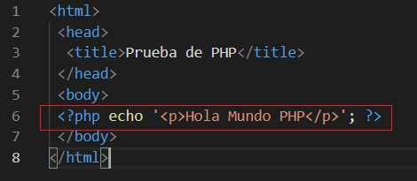

PHP es un lenguaje de guiones de propósito general, pero diseñado para el desarrollo de páginas web dinámicas utilizando código embebido dentro del lenguaje de marcas. Su sintaxis está basada en la de C / C++, y por lo tanto es muy similar a la de Java.
Aunque se puede hacer de otras formas, lo más habitual es utilizar PHP incrustado en fichero HTML, utilizando la etiqueta <?php (para abrir el bloque de PHP) y ?> (para cerrar el bloque PHP).

El código se ejecuta por un entorno de ejecución con el que se integra el servidor web (normalmente utilizando Apache con el módulo mod_php). La configuración tanto del servidor web Apache, como de PHP, se realiza por medio de ficheros de configuración. El de Apache es httpd.conf, y el de PHP es php.ini. Este fichero, php.ini, puede encontrarse en distintas ubicaciones.
La función phpinfo() informa, entre otras muchas cosas, del lugar en que se encuentra almacenado el fichero php.ini en el ordenador.
Dependiendo de cómo se integre PHP con Apache, los cambios que realices en el fichero de configuración se aplicarán en un momento o en otro. Si como es nuestro caso, utilizamos mod_php para ejecutar PHP como un módulo de Apache, las opciones de configuración de PHP se aplicarán cada vez que se reinicie Apache. Por tanto, es importante hacerlo cada vez que se hagan cambios en php.ini. Por ejemplo: sudo /etc/init.d/apache2 restart, sudo service apache2 restart o sudo systemctl restart apache2.service.
Algunas de las directivas más utilizadas que figuran en el fichero php.ini son:
- short_open_tags. Indica si se pueden utilizar en PHP los delimitadores cortos <? y ?>. Es preferible no usarlos, pues puede causarnos problemas si utilizamos páginas con XML. Para prohibir la utilización de estos delimitadores con PHP le asignamos a esta directiva el valor Off.
- max_execution_time. Permite que puedas ajustar el número máximo de segundos que podrá durar la ejecución de un script PHP. Evita que el servidor se bloquee si se produce algún error en un script.
- error_reporting. Indica qué tipo de errores se mostrarán en el caso de que se produzcan. Por ejemplo, si haces error_reporting = E_ALL, te mostrará todos los tipos de errores. Si no quieres que te muestre los avisos pero sí otros tipos de errores, puedes hacer error_reporting = E_ALL & ~E_NOTICE.
- file_uploads. Indica si se pueden o no subir ficheros al servidor por HTTP.
- upload_max_filesize. En caso de que se puedan subir ficheros por HTTP, puedes indicar el límite máximo permitido para el tamaño de cada archivo. Por ejemplo, upload_max_filesize = 1M.
A medida que vayas escribiendo código en PHP, será útil que introduzcas en el mismo algunos comentarios que ayuden a revisarlo cuando lo necesites. En una página web los comentarios al HTML van entre los delimitadores <!-- y -->. Dentro del código PHP, hay tres formas de poner comentarios:
- Comentarios de una línea utilizando //. Son comentarios al estilo del lenguaje C. Cuando una línea comienza por los símbolos //, toda ella se considera que contiene un comentario, hasta la siguiente línea.
- Comentarios de una línea utilizando #. Son similares a los anteriores, pero utilizando la sintaxis de los scripts de Linux.
- Comentarios de varias líneas. También iguales a los del lenguaje C. Cuando en una línea aparezcan los caracteres /*, se considera que ahí comienza un comentario. El comentario puede extenderse varias líneas, y acabará cuando escribas la combinación de caracteres opuesta: */.
Recuerda que cuando pongas comentarios al código PHP, éstos no figurarán en ningún caso en la página web que se envía al navegador (justo al contrario de lo que sucede con los comentarios a las etiquetas HTML).